Integración de OpenClaw con Feishu
OpenClaw (anteriormente Clawdbot) es una puerta de enlace de agentes de IA de código abierto y prioridad local, que permite que los modelos grandes se ejecuten 7X24 en tu computadora/servidor. Admite operar directamente la computadora, navegar por la web, ejecutar comandos y también se integra sin problemas con plataformas de chat como Feishu, Telegram, Discord.
En este capítulo, integraremos OpenClaw con Feishu para lograr escenarios de automatización como envío de mensajes, envío de imágenes, recepción de archivos, interacción de aprobaciones, sincronización de datos, etc.
Si aún no has instalado OpenClaw, debes instalarlo primero:
Instálalo globalmente con el comando npm:
npm install -g openclaw@latest --registry=https://registry.npmmirror.com
O instálalo con el comando pnpm:
pnpm add -g openclaw@latest
Para una referencia detallada sobre la instalación de OpenClaw:Tutorial de OpenClaw (Clawdbot)。
Instalar el complemento oficial de Feishu
La nueva versión de OpenClaw ya tiene soporte integrado. Podemos usar el siguiente comando para habilitarlo:
openclaw plugins enable feishu
A continuación podemos usaropenclaw plugins listcomando para ver si está habilitado,disabledsignifica deshabilitado,loadedsignifica habilitado:

Crear un robot en la plataforma abierta de Feishu
Abre la plataforma abierta de Feishuhttps://open.feishu.cn/appHaz clic en "Crear aplicación empresarial autoconstruida":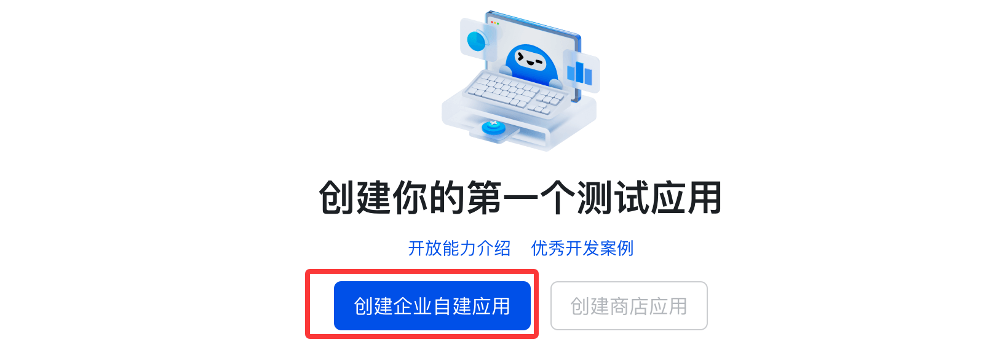
Completa el nombre de la aplicación (por ejemplo, "Mi OpenClaw AI"), descripción + icono a tu gusto:

Copia las credencialesApp ID 和 App Secret, se necesitarán más adelante:
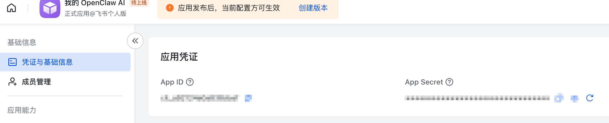
A continuación, vuelve a la terminal e ingresa el siguiente comando para configurar el canal:
openclaw channels add
Selecciona "Feishu/Lark (飞书) (needs app creds)":

Selecciona "Enter App Secret":
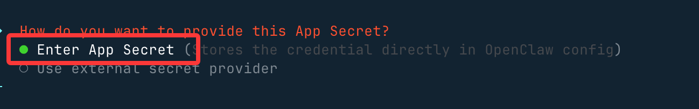
Ingresa respectivamente los de la aplicación que creamos anteriormente en FeishuApp Secret 和 App ID：

Configura el modo de conexión y usa el dominio nacional:
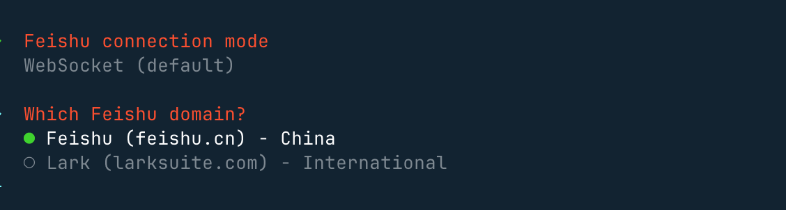
A continuación, en la política de chat grupal selecciona "Open", de esta manera podrá responder a todos los chats grupales:
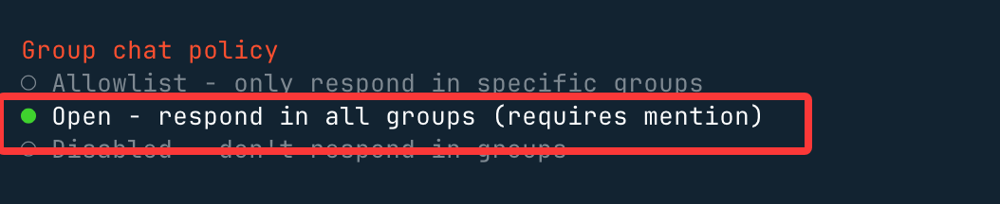
Si seleccionas "Allowlist", solo se responderá en los chats grupales de la lista blanca.
Después de hacer las selecciones, vuelve al menú y eligeFinished, luego para el resto presiona Enter con los valores predeterminados, y así se completará la configuración de Feishu.

Vuelve al lado web, revisa las opciones de canal y verás que Feishu ya está habilitado:
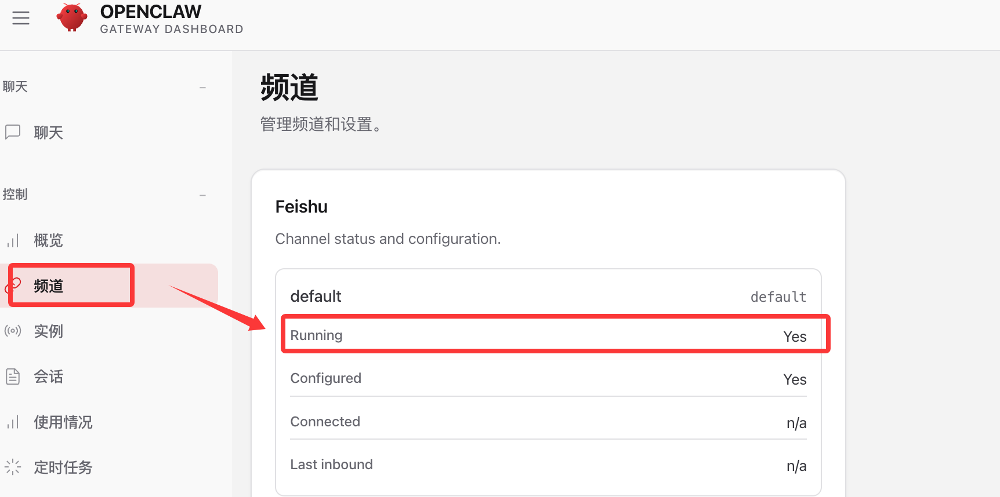
Habilitar las capacidades del robot
A continuación, vuelve a la interfaz de la aplicación que creamos en Feishu. Menú izquierdo → Agregar capacidad de aplicación → Robot. Haz clic en el botón "Agregar" para habilitar las capacidades del robot:
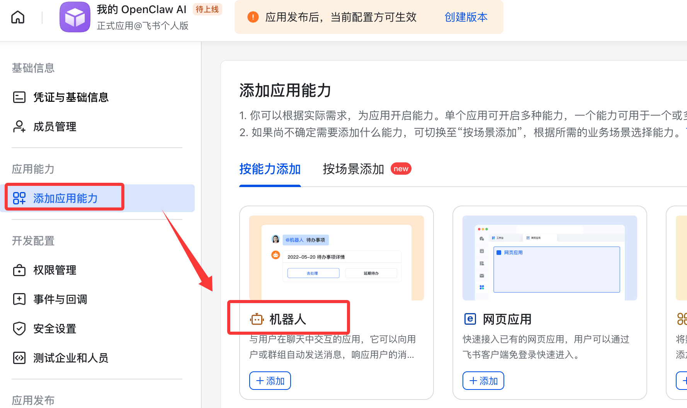
Configura los permisos. Izquierda → Gestión de permisos → Importar/exportar permisos en lote:

Pega el siguiente JSON:
{
"scopes": {
"tenant": [
"aily:file:read",
"aily:file:write",
"application:application.app_message_stats.overview:readonly",
"application:application:self_manage",
"application:bot.menu:write",
"cardkit:card:read",
"cardkit:card:write",
"contact:user.employee_id:readonly",
"corehr:file:download",
"event:ip_list",
"im:chat.access_event.bot_p2p_chat:read",
"im:chat.members:bot_access",
"im:message",
"im:message.group_at_msg:readonly",
"im:message.p2p_msg:readonly",
"im:message:readonly",
"im:message:send_as_bot",
"im:resource"
],
"user": ["aily:file:read", "aily:file:write", "im:chat.access_event.bot_p2p_chat:read"]
}
}
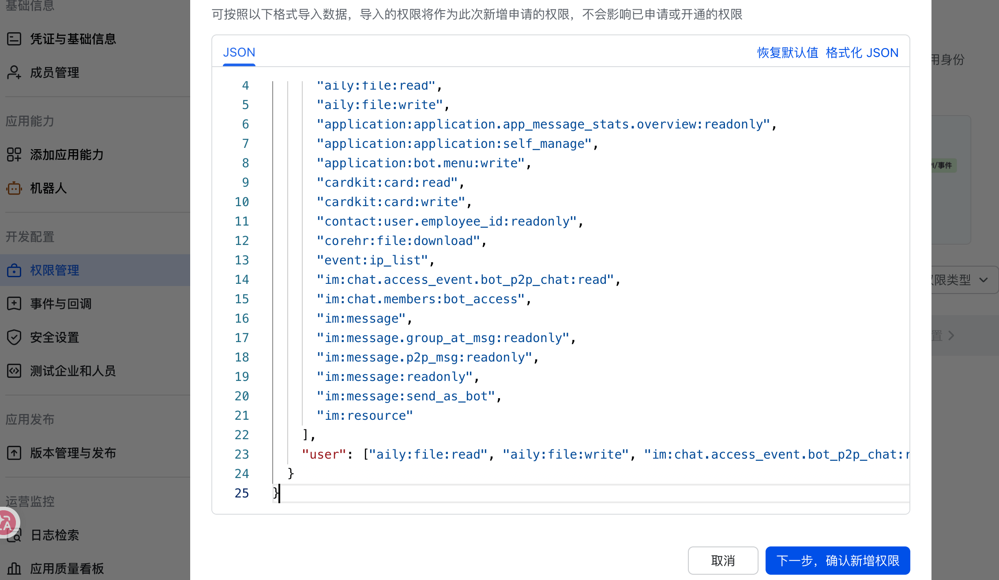
Lista de permisos:

Configurar la suscripción de eventos
A continuación, necesitamos suscribirnos a eventos relevantes para la aplicación. En el menú izquierdo selecciona Eventos y devoluciones de llamada → Configuración de eventos:
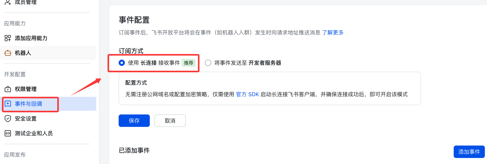
El método de suscripción usa una conexión larga para recibir eventos (WebSocket) y luego guarda.
Agrega los siguientes eventos:
- im.message.receive_v1 - Recibir mensajes
- im.message.message_read_v1 - Recibo de lectura de mensajes
- im.chat.member.bot.added_v1 - El robot se une al grupo
- im.chat.member.bot.deleted_v1 - El robot es eliminado del grupo
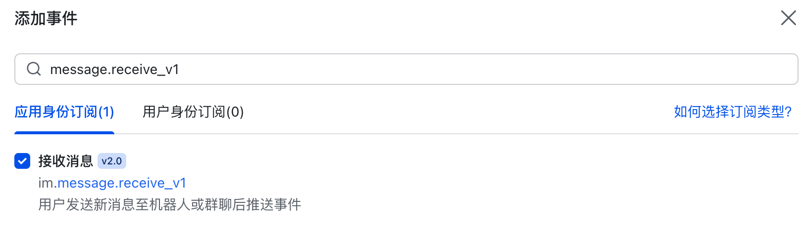
Lista de eventos agregados:

Publicar la aplicación
Izquierda → Gestión de versiones y publicación → Crear versión → Enviar para revisión → Publicar:
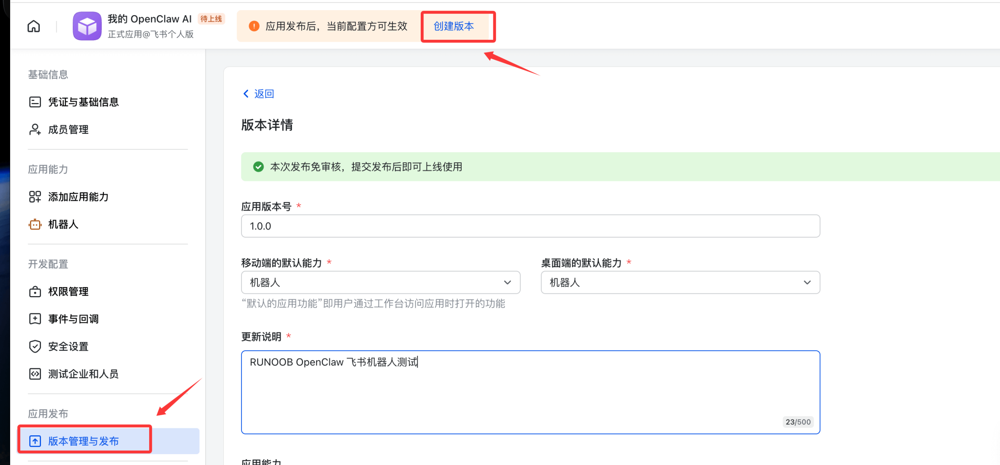
Información de publicación:

Iniciar y probar
Inicia openclaw:
openclaw gateway 或 openclaw gateway --port 18789
Usa Feishu para crear un grupo de prueba:

En la configuración del grupo, agrega el robot que acabamos de crear:

A continuación, podemos comenzar a chatear con OpenClaw. Puedes mencionarlo con @ para que se presente; si responde normalmente, significa que el flujo ha funcionado:
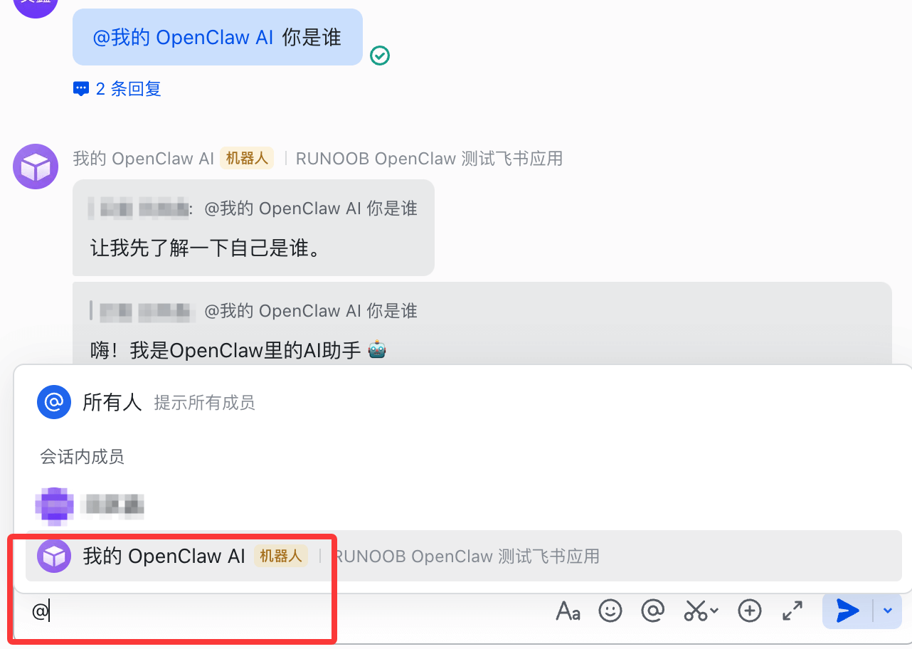
Otras extensiones